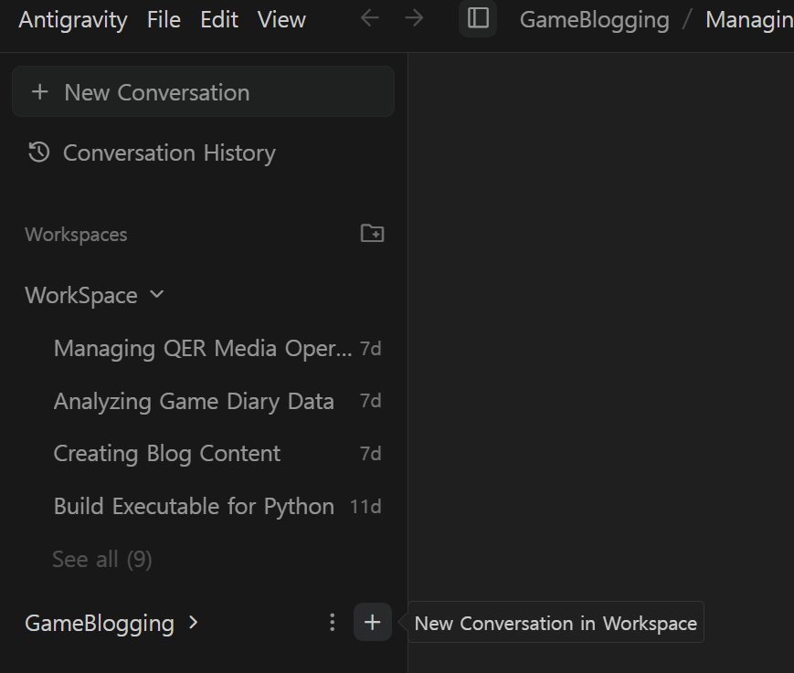
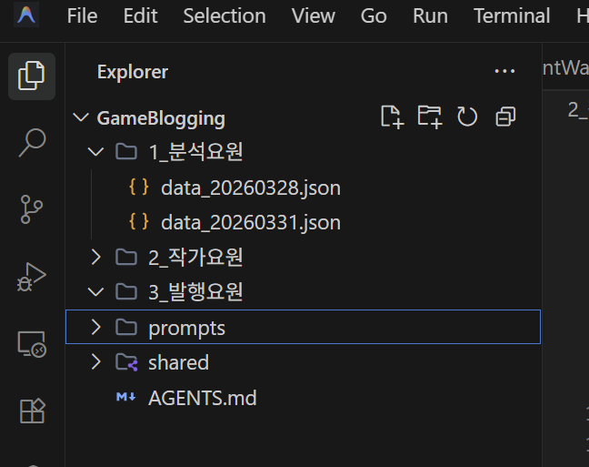

에이전트 소환 완료!
근데 잠깐, AGENTS.md가 뭔가요? 🤖
셋업 끝, 이제 진짜 시작입니다. Multi‑Agent Architecture 구성부터 업계 표준 통합까지.
🛠️ STEP 01. Agent Manager로 팀원 소환하기
Antigravity의 Agent Manager를 실행하면 현재 프로젝트 이름이 상단에 표시됩니다. 여기서 + 버튼을 누르면 새로운 AI 직원(에이전트)를 추가할 수 있습니다. 클릭 한 번이면 됩니다.

👥 STEP 02. QER Company 팀 구성 완료
우리 ‘QER Company’의 업무 특성에 맞게 총 4명의 AI 직원을 구성했습니다.
QER 멀티에이전트 팀원 명단:
📋 총괄 매니저 — 사장님의 지시를 받아 팀 전체를 지휘
✍️ 작가 요원 (Editor Paul) — 분석 데이터를 HTML 포스팅으로 변환
🔍 분석 요원 (Extractor) — 일기에서 핵심 데이터 추출 및 JSON화
⚙️ 개발 요원 (Developer) — 파이프라인 자동화 및 기술 업무 담당

📋 STEP 03. MD 파일로 ‘사내 업무 규정집’ 각인하기
실행 후 각 에이전트에게 지침 MD 파일을 연결해줍니다. 이렇게 만들어진 각 직원들의 지침들이 추가 되었습니다.

INDUSTRY STANDARD UPDATE
업계 표준 AGENTS.md의 위력
분산된 지침 파일을 하나로! Anthropic, Google, OpenAI 등 주요 AI 공급사들이 제기한 표준화 흐름에 따라 탄생한 AGENTS.md. 루트 폴더에 이 파일 하나만 놓으면 모든 AI 에이전트 간 호환과 관리가 훨씬 효율적입니다.
⚡ STEP 04. 대망의 AGENTS.md 통합 최종 구조
기존의 분산된 모든 에이전트 지침을 섹션별로 정리하여 루트의 AGENTS.md로 옮겼습니다. 이제 저는 이 파일 하나만 관리하면 되는 것이지요. 꿀팁입니다!

"Multi‑Agent, 어렵지 않습니다.
준비물: AGENTS.md 하나면 충분합니다."
여러분들도 멀티에이전트를 구상하신다면 처음부터 이 방식으로 시작하세요! 👋